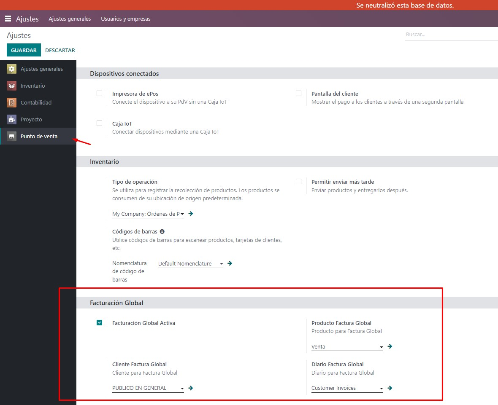
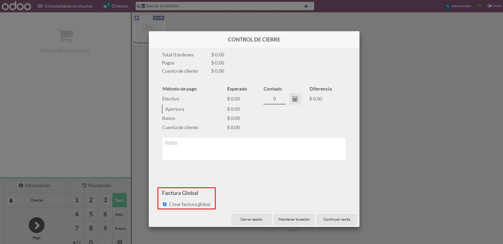
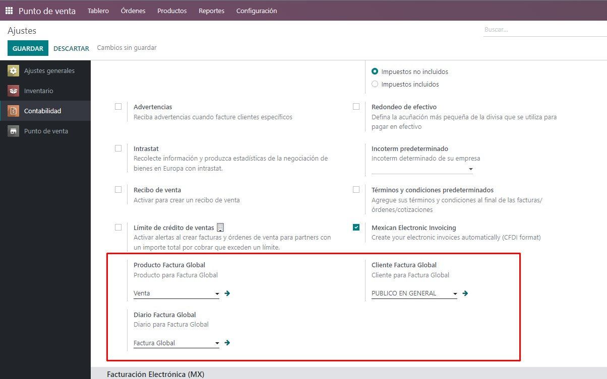
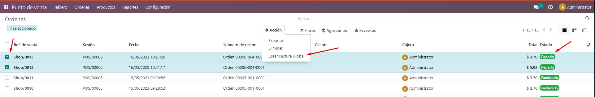
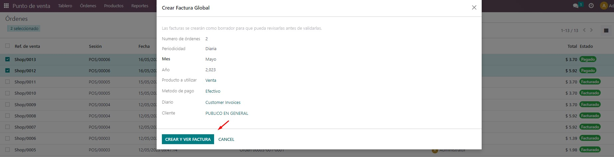

Configuración de facturación Global desde el POS.
Asignación del cliente, producto y diario a utilizar
por defecto en las facturas globales creadas al cierre del POS

Al momento de cerrar el POS, preguntará si se desea crear factura global de todos los pedidos no facturados

Configuración de facturación Global desde el backend
Asignación del cliente, producto y diario a utilizar
por defecto en las facturas globales

Selección de órdenes del POS, para el creado de
órdenes del POS, (Únicamente se permiten órdenes en estado pagado, con el punto de venta abierto)

Menú informativo al crear factura global
